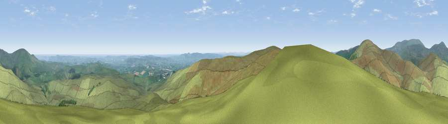

Viewpoint c12254_7899
#1443 in England · top 6% of its area beats it · —Where it is
The exact computed spot (NT 94975 12712). Click the marker for map links.
The view, rendered

A 360° render of this exact spot computed from the terrain model, tree cover and land cover — summer colours, afternoon light, calibrated against photographs of famous viewpoints. Real trees, hedges and buildings will differ in detail.
The panorama
Grey silhouette: terrain skyline in each direction (720 bearings, Earth curvature and refraction included). Dashed green: skyline with trees (+15 m) and buildings (+8 m) as obstacles. Blue strip: how far the ground is visible on each bearing.
Where the view opens
Wedge length = distance to the farthest visible ground on that bearing (vegetation-aware). Rings at 10, 25 and 50 km.
What fills the view
94% grassland · 3% woodland · 2% cropland ·
Angular shares of the visible panorama (visual magnitude), not map area. Landscape diversity 0.12 (0–1 Shannon).
Key numbers
More beautiful places nearby
The staircase of upgrades: each row has a higher view potential than everything closer. Driving times are estimates from straight-line distance, calibrated against real road routing — check an actual route before setting out.
| Place | Direction | Drive | Score |
|---|---|---|---|
| Wether Cairn [Wholhope Hill] | SW · 1 km | ~4 min | 80.7 |
| Viewpoint c12273_7856 | WNW · 2 km | ~6 min | 83.7 |
| Viewpoint c12396_7887 | N · 7 km | ~15 min | 85.7 |
| Viewpoint near Kirknewton | N · 17 km | ~29 min | 86.1 |
| Viewpoint near Chillingham | NE · 18 km | ~31 min | 88.1 |
| Long Side | SW · 109 km | ~134 min | 89.5 |
| Viewpoint near Easington | SE · 122 km | ~146 min | 90.2 |
| The Knoll | S · 526 km | ~477 min | 91.0 |
55.40832, -2.08091 · source: screening · position refined by local search. Computed location — check access rights before visiting.